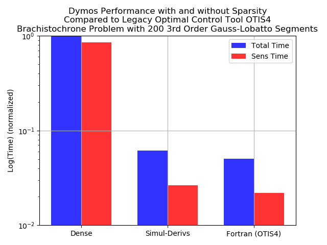

Brachistochrone with Simultaneous Derivatives¶
A key feature of collocation algorithms such as high-order Gauss-Lobatto collocation or the Radau pseudospectral method is that they exhibit a large degree of sparsity in the total Jacobian. By modeling the state-time histories as a series of polynomial segments, the collocation defect constraints within each segment are largely dependent only on the state and control values within the same segment. State-of-the-art pseudospectral optimization tools such as SOCS, OTIS, and GPOPS-II use the notion of sparse finite differences to perturb multiple independent variables simultaneously when approximating the constraint Jacobian. This can significantly reduce the computational effort required to approximate the entire Jacobian via finite difference.
The unique way in which OpenMDAO assembles analytic derivatives across the problem allows us to use a similar approach to provide the analytic constraint Jacobian. This approach can reduce the time required to solve moderately-sized optimal control problems by orders of magnitude and make the convergence more robust.
OpenMDAO uses a simultaneous “coloring” algorithm to determine which variables can be perturbed simultaneously to determine the total constraint Jacobian. Variables in the same “color” each impact a unique constraint, such that when all the variables are perturbed we can be assured that any change in the constraint vector is due to at most one scalar variable. Since OpenMDAO uses a linear solver to assemble to total derivative Jacobian, coloring reduces the number of linear solves from one per variable in forward mode to one per color. In the brachistochrone example below this reduces the number of linear solves from 1001 to 9. This capability makes problems of moderate size run orders of magnitude faster, and can make intractably large problems tractable.
Note
While some optimizers (SNOPT and IPOPT) are particularly adept at dealing with large, sparse nonlinear programming problems, coloring can still benefit drivers which do not account for sparsity (such as SLSQP) since it significantly reduces the cost of computing the Jacobian.
Note
Currently OpenMDAO’s coloring algorithm requires that problems be setup using “forward” mode.
Step 1: Using OpenMDAO’s Simul-Coloring Capability¶
OpenMDAO supports dynamic simul-coloring, meaning it can automatically run the Jacobian coloring algorithm before handing the problem to the optimizer. To enable this capability, simply add the following line to the driver.
driver.declare_coloring()
By default the coloring algorithm will attempt to determine the sparsity pattern of the total jacobian by filling the partial jacobian matrices with random noise and searching for nonzeros in the resulting total jacobian. At times this might report that it failed to converge on a number of nonzero entries. This is due to the introduction of noise during the matrix inversion by the system’s linear solver. This can be remedied by using a different linear solver, such as PETScKrylov, or by telling the coloring algorithm to accept a given tolerance on the nonzero elements rather than trying to determine it automatically. This can be accomplished with the following options to declare coloring:
driver.declare_coloring(tol=1.0E-12, orders=None)
Setting orders to None prevents the automatic tolerance detection. The value of tol is up to the user. If it is too large, then some nonzero values will erroneously be determined to be zeros and the total derivative will be incorrect. If tol is too small then the sparsity pattern may be overly conservative and degrade performance somewhat. We recommend letting the coloring algorithm detect the sparsity automatically and only resorting to a fixed tolerance if necessary.
The simul_coloring script outputs the following information about our problem:
1 uncolored columns
5 columns in color 1
100 columns in color 2
100 columns in color 3
101 columns in color 4
101 columns in color 5
195 columns in color 6
197 columns in color 7
201 columns in color 8
Total colors vs. total size: 9 vs 1001 (99.1% improvement)
Running the coloring algorithm separately¶
OpenMDAO supports the ability to run the coloring algorithm “offline” and then provide the data to the driver via a saved file. This is potentially useful to users whose model is particularly expensive to color, and whom aren’t changing the problem significantly between runs. Consult OpenMDAO’s documentation for more information on this feature.
Performance comparison with and without simultaneous derivatives¶
The following chart demonstrates the difference in timing that is achieved by using simultaneous derivatives. In this case the time required to solve the problem dropped by over an order of magnitude. For comparison, the performance of the legacy optimal control software OTIS4 is also shown. When using simul-derivs, the performance of Dymos comes well within an order of magnitude (about 1.1x in this case) of the performance of OTIS. This is despite the fact that Dymos supports analytic derivatives, parallelization, and a non-conservative sparsity pattern which should close the gap further as problem size grows.
This case has 600 constraints and 1001 variables, giving a total constraint Jaobian size of 600600. Using a conservative sparsity pattern (assuming any variable in a segment can impact any constraint in the same segment), OTIS computes that there are 7794 nonzero elements in the Jacobian. The non-conservative sparsity pattern calculated by OpenMDAO gives 4393 nonzero elements.
General Performance Tips Using Dymos¶
1. Use the CSCJacobian as the top-level Jacobian where possible¶
The CSCJacobian is a sparse Jacobian format used internally by OpenMDAO that can significantly reduce memory requirements and signficantly improve performance of the Jacobian calculation.
2. Use DirectSolver as the top-level linear solver where possible¶
Unless the problem grows extremely large, using DirectSolver to solve the linear system which computes the Jacobian can yield significant performance improvements.
3. Use simultaneous derivatives¶
As we’ve shown above, handling sparsity and simultaneous derivatives can significantly improve performance.
4. Use “compressed” transcription when parallelization is not a concern¶
When providing the state and control values at segment boundaries, there are two options. If a phase is declared with compressed=True (the default), the one value for the state/control will be provided at the boundary, and used at the shared endpoint by both segments. If compressed=False, then then two unique values are provided as design variables, with state and control value continuity at the segment bound being enforced via a linear constraint. Experience has shown that using compressed transcription signficantly improves performance by reducing the number of variables and constraints given to the optimizer. On the other hand, when attempting to distribute the analysis across more than one processor using the separable uncompressed transcription may give better performance.